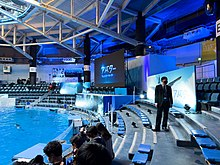

Аватар: Шлях води
«Авата́р: Шлях води́» (англ. Avatar: The Way of Water, також відомий як «Авата́р-2»; англ. Avatar 2) — американський епічний науково-фантастичний 3D-фільм режисера та сценариста Джеймса Кемерона, створений студіями Lightstorm Entertainment і TSG Entertainment та розповсюджений студією 20th Century Studios.
Продовження фільму «Аватар» (2009). Джеймс Кемерон виступає режисером та продюсером разом з Джоном Ландау а також співавтором сценарію разом з Ріком Джаффа і Амандою Сілвер на основі сюжету, який вони утрьох створили разом з Джошом Фрідманом і Шейном Салерно[5][6][7].
Майже усі члени акторського складу першої частини повернулись до своїх ролей, зокрема Сем Вортінгтон, Зої Салдана, Стівен Ленг, Джованні Рібізі, Джоел Девід Мур, Діліп Рао, Сі Сі Ейч Паундер, Метт Джеральд та Сіґурні Вівер повертається в додатковій ролі (персонаж Кірі).
Після неодноразових затримок очікуваного графіка, прем'єра стрічки «Аватар: Шлях води» відбулася в Лондоні 6 грудня 2022 року, а прем'єра в США відбулася 16 грудня 2022 року. Фільм зібрав у світовому прокаті понад 2 мільярда доларів, ставши першим за рахунком найкасовішим фільмом 2022 року та отримав загалом позитивні відгуки від критиків. Стрічку хвалили за візуальні ефекти й технічні досягнення, утім, головним недоліком вважається її тригодинна тривалість[8]. Фільм перетнув позначку в мільярд доларів за два тижні, що й зробило його шостим з-поміж касових стрічок[9]. Національна рада рецензій та Американський інститут кіно назвали «Аватар: шлях води» одним із десяти найкращих фільмів 2022 року. Картина також отримала численні нагороди, зокрема номінації на «найкращий фільм — драма» і «найкращий режисер» на 80-й церемонії вручення премії «Золотий глобус»
Сюжет
За п'ятнадцять років після того, як На'ві відбили вторгнення людей з адміністрації розвитку ресурсів (RDA) на Пандору, Джейк Саллі живе як вождь клану Оматікайя і виховує сім'ю з Нейтірі, до якої входять сини Нетеям і Лоак, дочка Тук, прийомна дочка Кірі (народжена від аватара Грейс Августін) і людський хлопчик на ім'я Майлз «Павук», син полковника Кворича, який народився на Пандорі і не зміг через юний вік летіти на Землю у кріокапсулі. На жах На'ві, RDA повертається з великим флотом, щоб підготувати Пандору до колонізації людьми, коли Земля гине. Серед новоприбулих є «рекомбінанти» — штучно вирощені На'ві, в яких імплантовані розум і спогади загиблих солдатів-людей, а рекомбінант Кворича служить їх лідером. RDA випалює ліси та будує бази. На'ві змушені тікати.
Через рік Джейк очолює партизанську кампанію проти RDA. Його бійці саботують людські лінії постачання, шахти й трубопроводи. Під час операції проти повстанців Кворич та його підлеглі захоплюють дітей Джейка. Джейк і Нейтірі прибувають і звільняють їх, але Павук залишається в полоні у Кворича, який визнає його сином. Кворич розуміє, що хлопчик не зрадить його, але планує скористатися його близькістю з На'ві. Після того, як RDA не вдається змусити Павука розкрити інформацію за допомогою тортур, Кворич вирішує провести з ним час, щоб залучити Павука на свій бік, і, в свою чергу, Павук вчить Кворича культурі та мові На'ві. Джейк усвідомлює, що Павук знає місцеперебування його сім'ї, тому він з рідними добровільно йдуть з Оматикаї і прямують до клану рифових На'ві Меткаїна на східному узбережжі материка. Хоча Джейку та його родині надається притулок, деякі з племені ставляться до них неприязно через їхнє напівлюдське походження (Джейк, Лоак і Кірі мають десять пальців на руках і ногах, а не вісім) і непристосованість до життя в воді. Попри те, сім'я вивчає звичаї рифового народу, Кірі розвиває духовний зв'язок з морем і його мешканцями, а Лоак дружиться з Циреєю, дочкою вождя клану Тоноварі і його дружини Ронал.
Лоак вступає в бійку з братом Циреї Аонунгом. Коли він повертається, щоб вибачитися за наполяганням Джейка, Аонунг та його друзі заманюють його в подорож на територію небезпечного морського хижака і залишають на мілині. Лоак, однак, дружиться з Паяканом, тулкуном — розумним і миролюбним представником китоподібних, чий вид Меткаїна вважають своєю духовною родиною. Повернувшись, Лоак завойовує дружбу Аонунга, беручи на себе провину за подорож, але йому кажуть, що Паякан вигнанець серед свого виду. Під час подорожі до духовного дерева Меткаїнів, яке знаходиться під водою, Кірі з'єднується з ним і зустрічає свою померлу матір, свідомість якої живе всередині планети. Однак їхня зустріч переривається, коли у Кірі трапляється напад і вона втрачає свідомість. Джейк звертається за допомогою до людських учених Норма Спеллмана та Макса Пателя, котрі симпатизують На'ві. За допомогою їхнього медичного обладнання в Кірі діагностують епілепсію та попереджають, що вона не може ризикувати знову підключитися до дерева духів. Хоча Кірі врятована втручанням Ронала, Кворич здатний відстежити літак, яким користувалися Спеллман і Патель, до архіпелагу, де живе рифовий народ. Взявши з собою Павука, він захоплює китобійне судно, яке полює на тулкунів, щоб зібрати їхні мозкові ферменти для омолоджувального засобу під назвою Амріта. Кворич та його підлеглі подорожують по всьому архіпелагу, жорстоко допитуючи корінні племена про місцеперебування Джейка; коли це виявляється безрезультатним, він наказує китобійній команді вбивати тулкунів поблизу сіл, щоб виманити Джейка, знаючи, що це розлютує племена. Лоак подумки зв'язується з Паяканом і дізнається, що тулкуна вигнали, бо він пішов проти пацифістських звичаїв свого виду і напав на китобоїв, які вбили його матір, що призвело до загибелі багатьох тулкунів і На'ві.
Коли Меткаїна дізнаються про вбивства тулкуна, Лоак відправляється попередити Паякана, за ним слідують його брати і сестри, Цирея, Аонунг і Ротхо. Вони виявляють, що Паякан переслідується китобоями, а Лоак, Цирея і Тук захоплені Кворичем. Коли їхні діти опинилися в небезпеці, Джейк, Нейтірі і декілька воїнів Меткаїна вирушили протистояти людям. Кворич змушує Джейка здатися, але, побачивши, що Лоак перебуває в небезпеці, Паякан нападає на китобоїв, спричиняючи бійку, в якій гине велика частина команди і пошкоджується судно. Нетеям рятує Лоака, Цирею та Павука, але в нього стріляють люди Кворича, і незабаром після цього він помирає від ран. Джейк стикається з Кворичем, який використовує Кірі як заручницю. Коли Нейтірі робить те ж саме з Павуком, Кворич спочатку заперечує свої стосунки з ним, але утримується, коли Нейтірі ріже Павука поперек грудей, перед тим як підняти ніж, щоб убити його.
Джейк, Кворич, Нейтірі та Тук потрапляють у пастку всередині потопаючого судна. Джейк задушує Кворича до непритомності, і його рятують Лоак і Паякан, тоді як Кірі закликає морських істот допомогти їй врятувати Нейтірі та Тука. Павук рятує Кворича, але відмовляється летіти з ним і возз'єднується з родиною Джейка. Після похорону Нетеяма Джейк повідомляє Тоноварі та Роналу про своє рішення залишити плем'я Меткаїна. Однак Тоноварі приймає його до клану і запрошує його сім'ю залишитися. Джейк та його сім'я приймають пропозицію і налагоджують нове життя в морі, причому Джейк обіцяє відновити свою кампанію проти загарбників-людей, тоді як Кворич обіцяє поквитатися.
Історія створення
Початок
Ще в червні 2006-го, за три роки до виходу в прокат першого «Аватара», режисер Джеймс Кемерон повідомив про можливе створення сиквелів фільму, якщо той отримає визнання[10]. У середині лютого 2010 року режисер в інтерв'ю телеканалу MTV заявив, що, перш ніж приступати до зйомок сиквелу, йому необхідно вирішити деякі питання щодо контракту зі студією. Також Кемерон повідомив про те, що «Аватар-2» буде продовженням історії основних персонажів попередньої частини[11]. У квітні 2010 року режисер розкрив деякі деталі щодо «Аватара-2» і «Аватара-3». Зокрема, він повідомив про акцент на океані Пандори як головному місці дії фільму, а також про намір включити всю зоряну систему Альфа Центаври в сюжет третьої частини[12]. У січні 2011 року Кемерон заявив, що обидва фільми він має намір зняти і завершити одночасно, але випустити з інтервалом в один рік. Окрім цього всі актори, чиї персонажі вижили до кінця фільму, отримали запрошення знятися в сиквелі[13].
Проблема дати виходу
У жовтні 2010 року журнал Variety, посилаючись на керівництво компанії 20th Century Fox, повідомив, що сиквел «Аватар» вийде в грудні 2014 року, до роботи над яким Кемерон повинен був приступити на початку 2011 року, а зйомки повинні були початися ближче до осені[14]. В січні 2011 року це підтвердив і сам Кемерон: «Зараз я працюю над написанням сюжету наступних двох фільмів про всесвіт „Аватар“,— повідомив він,— …Поточний план складається з випуску сиквела на Різдво 2014 року і триквела на Різдво 2015»[13]. У червні 2011 року вебвидання Fox News повідомило дату: вихід «Аватара-2» призначено на грудень 2014 року[15]. Але 2 серпня 2012 року стало відомо, що вихід переноситься на 2015 рік (або пізніше), оскільки режисер планує зняти одночасно другу і третю частину франшизи[16]. Потім стало відомо, що прем'єра відбудеться 16 грудня 2022 року[2].
Підготовка до зйомок
Ще в кінці листопада 2009 року, до виходу в прокат першого «Аватара», стало відомо, що Сем Вортінгтон підписав контракт про свою участь у зйомках двох продовжень цієї картини[17]
У лютому 2010 року Сіґурні Вівер, беручи участь у французькій телепередачі Le Grand Journal, заявила, що у Кемерона є плани по включенню її персонажа в сиквел, попри те, що доктор Ґрейс Оґустін вмирає в попередньому фільмі. На запитання ведучого, як це можливо, Вівер пояснила, що Оґустін знаходиться «в дереві», і у режисера є ідеї, як об'єднати «сім'ю разом»[18].
У березні 2011 року стало відомо, що Кемерон має намір здійснити експедицію разом з акторами в бразильські тропічні ліси, аби ближче познайомитися із способом життя місцевих племен і зрозуміти, як це — жити в джунглях[19]. У червні 2011 року автор повідомив, що він зайнятий написанням сценарію, а Південнокаліфорнійська студія Manhattan Beach вже будує знімальні об'єкти. Також Кемерон згадав про розробку нових анімаційних технік, а продюсер Джон Ландау припустив, що при зйомках цього і наступного фільмів буде створено більш ніж 700 робочих місць[15]. У січні 2012 року на сайті Bleedingcool.com з'явилася інформація, що Кемерон має намір провести експеримент з кадровою частотою. Якщо 3D-зйомка «Аватара» проходила з частотою 24 кадру в секунду[20], то тепер режисер планує збільшити цифру до 60. У березні 2012 року режисер на борту одномісного батискафа Deepsea Challenger занурився на дно Маріанського жолоба заради створення документального 3D-фільму про цю тихоокеанську западину і отримання натхнення для створення океанського дна Пандори[21]. Таким чином Кемерон став першою людиною за останні 50 років, хто зробив подібну експедицію[22], і третім в історії[23].
Знімання
Для знімання як цього фільму, так і наступного режисер орендував знімальний майданчик фірми MBS Media Campus (раніше відомої як Manhattan Beach Studios), що розташовується в Південній Каліфорнії, строком на 5 років. Характерними рисами цього майданчика є «агресивна» програма економії водних ресурсів, використання екологічно чистих миючих засобів і фарб, а також ряд інших «зелених» програм. Кемерон має намір встановити в студії сонячні батареї і зняти обидва фільми за рахунок сонячної енергії. Витрати на установку відповідного обладнання обійдуться режисерові в 5 мільйонів доларів[24].
Бюджет
Прем'єри трьох наступних сиквелів заплановані на 2024, 2026 та 2028 роки відповідно. При цьому доля останніх двох залежить від комерційного успіху «Аватара: Шляху води». Бюджет картини оцінюється в 350—460 млн доларів, що робить її одним з найдорожчих проєктів усіх часів. За оцінками журналу Forbes, бюджет «Аватара-2», з урахуванням маркетингу, перевищує $500 млн[25].
Трейлер
2 листопада 2022 року компанія Disney опублікувала перший трейлер майбутнього фільму[26].
Активність з фільмом
Упродовж 3 тижнів, під час прокату фільму було помічено «підвищення активності екоактивістів» — у багатьох соцмережах (Інстаграм, Тік-Ток,…) та невеликих мітингах по всіх країнах. У відео було помічено, що племена На'ві досить схожі на племена та живу природу інших континентів Землі, а «люди з неба» — це конкістадори та люди, що забруднюють навколишнє середовище, які хочуть знищити все і зробити світ підготовленим саме для них.
Продовження
«Шлях води» є першим із чотирьох запланованих продовжень «Аватара». Зйомки «Аватара-3» почалися одночасно з цим фільмом у Новій Зеландії 25 вересня 2017 року. Актори з попередніх фільмів, зокрема Вортінгтон, Салдана, Ленг, Вівер, Паундер, Кертіс, Рібізі, Мур, Рао та Джеральд оголосили про повернення. Уна Чаплін приєднається разом із Девідом Тьюлісом як нові персонажі[27].
Незважаючи на те, що останні два сиквели, як повідомляється, отримали дозвіл, Кемерон заявив в інтерв'ю в листопаді 2017 року: «Подивіться правді в очі, якщо „Аватар 2“ і „3“ не зароблять достатньо грошей, „4“ і „5“ не буде»[28]. Пізніше Тьюліс підтвердив це в лютому 2018 року, заявивши, що «вони роблять „2“ і „3“, вони подивляться, чи люди підуть, а потім вони зроблять „4“ і „5“ частини»[29]. З іншого боку, Вівер заявила в листопаді 2018 року, після завершення основних зйомок перших двох сиквелів, що зараз вона «зайнята створенням „Аватара 4“ і „5“», яку кілька ЗМІ розцінили як підтвердження того, що почалися зйомки двох останніх сиквелів.
У січні 2019 року, з огляду на запропоноване придбання 21st Century Fox компанією Walt Disney, генеральний директор Disney Боб Айгер підтвердив, що «Аватар-4» і «Аватар-5» розробляються, але не отримали офіційного дозволу. За словами продюсера Ландау в лютому 2019 року, Айгер міг бути неправильно витлумачений. Він сказав, що «Аватар-4» і «5» «не тільки [показані]», але й третина «Аватара-4» вже знята[30].